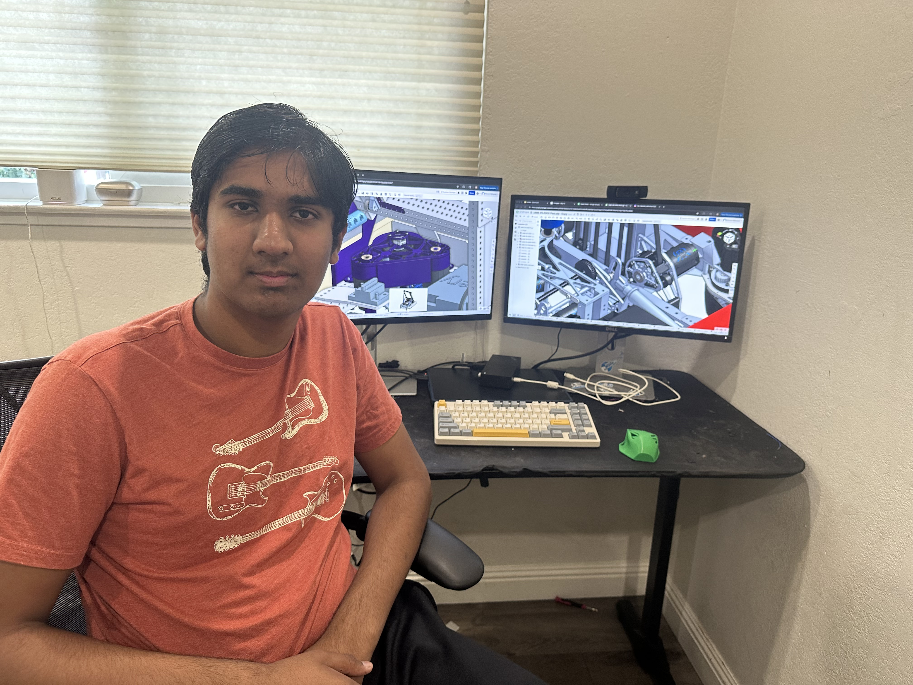
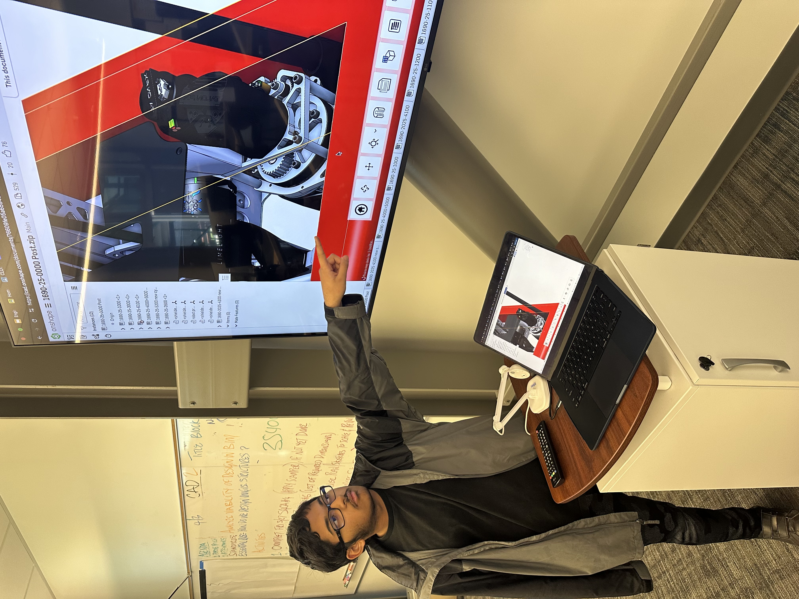
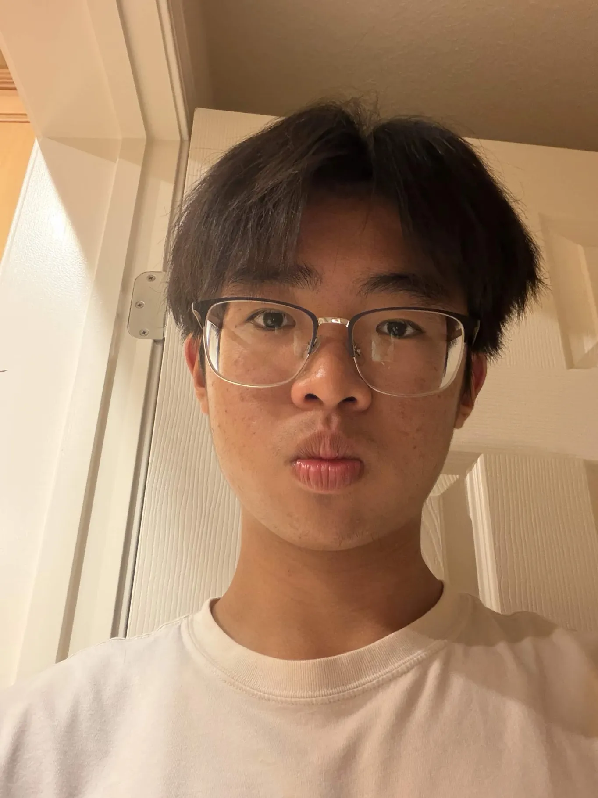
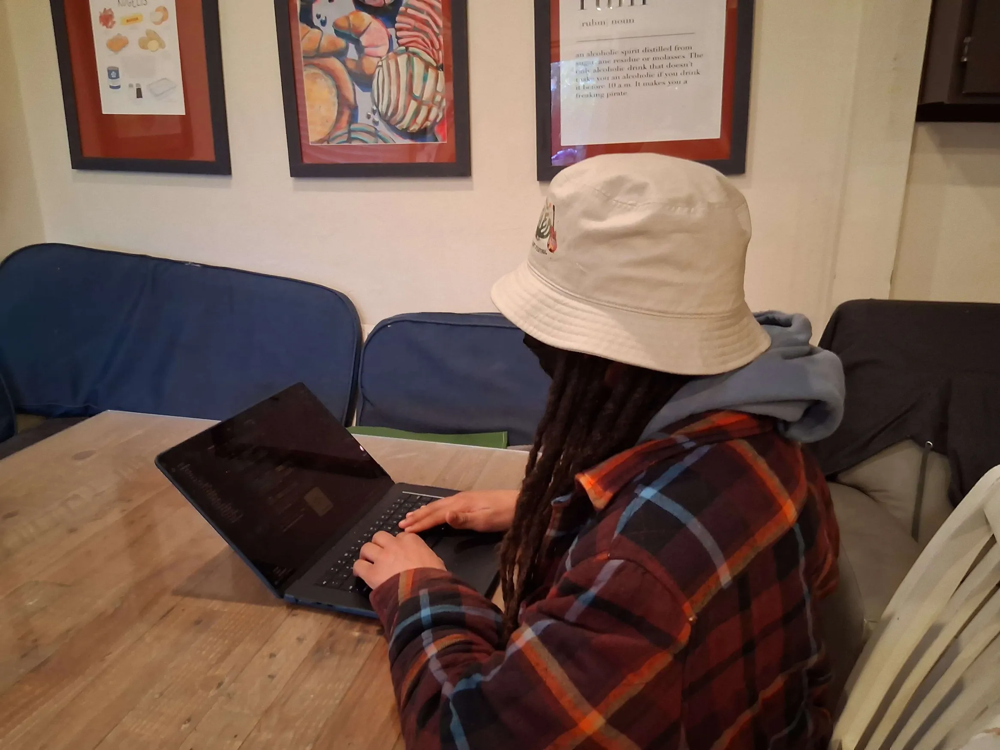
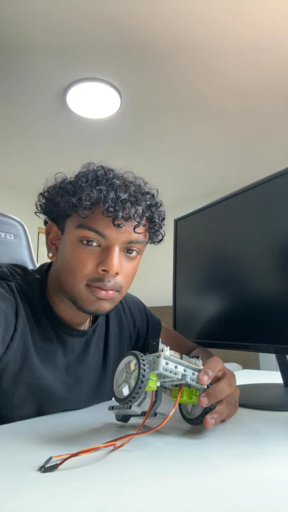
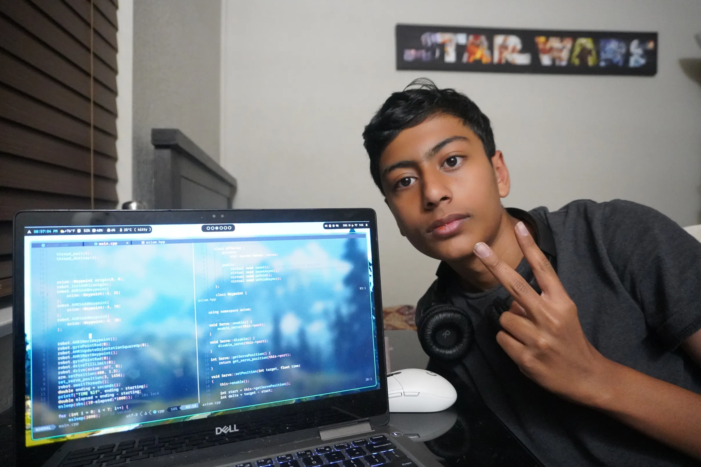

Our Leadership

Nimish Nijhawan
President & Founder
Nimish, the founder of the team, began his robotics journey in middle school, participating in Botball for two years before continuing on to FTC and later FRC teams. After gaining experience across multiple robotics programs, he founded this team to expand access to STEM and introduce robotics to students who may not have otherwise explored the field. Nimish leads all technical development and works closely with the mechanical subteam, while also driving fundraising efforts, managing team operations, and mentoring members. He plays a central role in the team's robotics training program, helping new students build skills and confidence in engineering.

Ayan Bera
Vice President
Ayan Bera is the Vice President and co-founder of IGNIS Robotics. He had previously been a member of two separate FRC teams. During middle school he was part of a VEX Robotics team. He later joined and coached students in VEX Robotics at ICC.

Evan Soh
Secretary
Evan Soh is the Secretary of IGNIS Robotics. He was previously a member of a VEX team in his freshman year. He will be working with the mechanical subteam and will be helping manage meeting minutes and attendance.

Tijan Noah White
Treasurer
Tijan, despite being new to the scene, has always had an avid interest in the field. He started learning Python in 2023, and switched to learning Java in late 2025. He was appointed to the treasurer position, and in addition to helping with code now oversees purchase-related paperwork and fundraising. He is very excited to further his understanding of machines and work alongside like-minded individuals.

Pranav Thirumala
Technical Lead — Mechanical
Pranav, one of the tech leads for the team, began his robotics journey in freshman year, a part of the FRC Team 254, The Cheesy Poofs, where his team won 2nd in the world freshman year and qualified for the world championships sophomore year. Junior year, after moving schools from Bellarmine College Preparatory to Milpitas High School, he joined the FTC team. Now Pranav has joined the new FRC team at Milpitas High as a technical lead, primarily focusing on the mechanical and electrical subteams.

Ahsan Ahmed
Technical Lead — Software
Our Technical Lead of Software, Ahsan Ahmed, has a year of Botball experience, where he developed skills in autonomous robotics, problem-solving, and structured coding under competition constraints. Outside of competitions, Ahsan consistently works on independent programming projects, expanding his knowledge in software design, debugging, and system integration. In his role, he will lead software development, including robot control systems, automation, and code architecture, and will closely oversee electrical work while mentoring team members.
Members Directory
A full roster is maintained in a Google Doc. Click the link below to view the current members list.